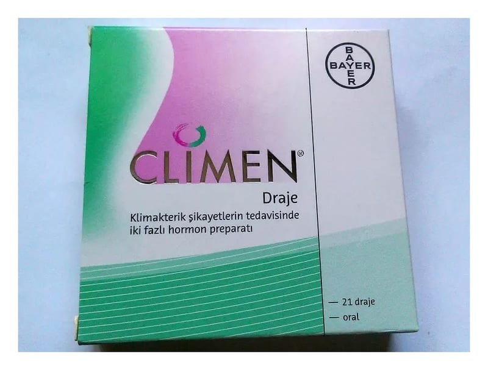

Climen 2 mg+ 2 mg/1 mg Kaplı Tablet, 21 Adet

Ne için kullanılır
KT · Bölüm 1• Her ambalajda, 11 adet beyaz renkli tablet ve 10 adet pembe renkli tablet olmak üzere toplam 21 adet CLIMEN kaplı tablet bulunmaktadır. • Takvimli ambalajda yer alan beyaz renkli tabletlerin herbiri 2 mg estradiol valerat etkin maddesi içerir. Pembe renkli tabletlerin herbiri ise, 2 mg estradiol valerat ve 1 mg siproteron asetat etkin maddelerini içermektedir. CLIMEN laktoz monohidrat (sığır) içerir.
• CLIMEN, rahmi alınmamış kadınların menopoza bağlı şikayetlerinde, deri ve idrar-üreme sisteminde hormon eksikliğine bağlı gerilemenin giderilmesinde, menopozda depresif ruh hali, doğal menopoz ve hormon eksikliği, yumurtalık yetmezliği ya da alınmasına bağlı eksiklik belirtilerinde, menopoz sonrası kemik erimesinin önlenmesinde, düzensiz adet kontrolünde, adet görememenin tedavisinde kullanılır.